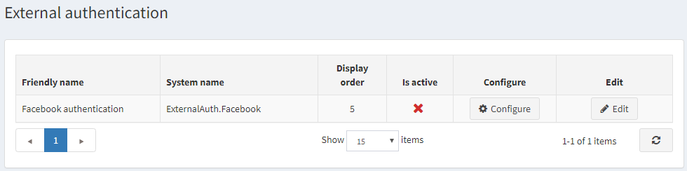
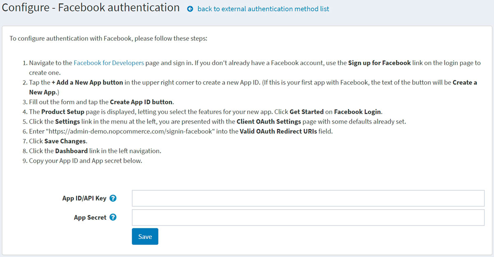

外部驗證方法
外部驗證方法允許使用者無需輸入電子郵件與密碼等登入資訊，即可登入 nopCommerce 網站。使用者可以透過外部網站（例如 Facebook 或 Google）進行驗證。nopCommerce 內建了透過 Facebook 進行外部驗證的功能。您可以使用來自 市集 的外掛來設定其他驗證方法。
當外部驗證方法設定完成並標記為啟用後，使用者會在登入頁面上看到新的驗證選項。
管理外部驗證方法
前往 設定 → 驗證 → 外部驗證。系統會顯示 外部驗證 視窗：

點擊驗證方法旁邊的 編輯 並勾選 啟用 以啟動該方法。您也可以定義該方法的 顯示順序。完成後，點擊 更新 按鈕以儲存變更。
點擊 設定 進行該方法的組態設定。
管理 Facebook 驗證
Facebook 驗證方法是一個內建的外部驗證外掛。若要設定 Facebook 驗證，請按照下列步驟操作：
在 設定 → 驗證 → 外部驗證 頁面上，點擊 Facebook 驗證 旁邊的 設定。系統會顯示 設定 - Facebook 驗證 視窗：

前往 Facebook for Developers 頁面並登入。如果您沒有 Facebook 帳號，請使用登入頁面上的註冊連結建立一個。
點擊右上角的 + Add a New App 按鈕以建立新的 App ID。（如果您是第一次在 Facebook 建立應用程式，按鈕文字將會是 Create a New App。）
填寫表單並點擊 Create App ID 按鈕。
系統將顯示 Product Setup 頁面，讓您為新應用程式選擇功能。在 Facebook Login 區域點擊 Get Started。
點擊左側選單中的 Settings 連結；您將會看到已帶入部分預設值的 Client OAuth Settings 頁面。
在 Valid OAuth Redirect URIs 欄位中輸入
https://yoursitename.com/signin-facebook，並將其中的yoursitename.com替換為您的網站網址。點擊 Save Changes。
點擊左側導覽列中的 Dashboard 連結。
將您的 App ID/API Key 與 App secret 複製並填入外掛設定頁面的對應欄位中。
點擊 儲存 按鈕。現在，您可以在前台網站的登入頁面上看到新加入的驗證方法。